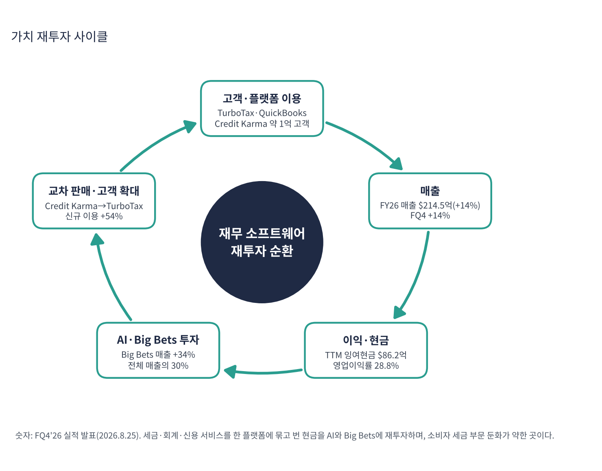

Intuit은 TurboTax·QuickBooks·Credit Karma·Mailchimp를 운영하는 재무 소프트웨어 회사다. FQ1'27에 매출이 +12% 늘고 GAAP 영업이익이 +63% 늘었지만, FY27 매출 가이던스를 낮췄고 소비자 세금 점유율이 떨어졌으며 주가가 연고점 $682의 40% 수준인 회사다. 주가는 $275.46다.
| 항목 | 내용 |
|---|---|
| 종목 | Intuit (INTU) · NASDAQ · 소프트웨어(재무·세금) · 캘리포니아 마운틴뷰 |
| 멀티플 | PER 15.7배 · PEG 0.78 · P/S 3.31배 (11/23 종가 $275.46) |
| 최근 분기(FQ1'27, 2026년 8~10월) | 매출 $43.54억(+12%), GAAP 영업이익 $8.68억(+63%), 순이익 $6.95억, 비GAAP EPS $2.91(새 기준) |
| 가이던스(FY27) | 매출 $230.8~233.6억(+8~9%), GAAP 영업이익 $74~75억, GAAP EPS $20.12~20.36(유지). FQ2 매출 $49.3~49.5억(+6~7%) |
| 현금·부채 | 스캐너: 현금·단기투자 $53.2억, 총차입금 $77.1억, TTM 잉여현금 $90.1억. 회사 발표 현금성자산 $40.42억 |
| 직책 | 인물 | 역할·특징 |
|---|---|---|
| 회장·CEO | Sasan Goodarzi | FY26 Big Bets(보조 세금·머니·중견기업) +34%, 전체 매출의 30%를 성과로 제시. FQ1'27에 Mailchimp 매각을 발표 |
| CFO | Sandeep Aujla | FY27 가이던스를 '고객 성장을 위한 의도적 조정'이라고 설명했고, FQ1'27에는 Credit Karma 가정 변경으로 매출 가이던스를 낮췄다 |
경영 스타일: '여러 서비스를 한 플랫폼에 묶고 AI로 고객 경험을 바꾼다'. FY26에 자사주 $55억(+96%)을 사고 배당을 15% 올렸으며, 잔여 매입 한도가 $79억이다. FQ1'27에는 Mailchimp를 Bending Spoons에 $36.8억(현금 약 $33.1억 + 상대 회사 지분 $3.68억)에 팔기로 했고, 현금은 자사주 매입에 쓸 계획이다. FTC 소송은 2026.9.15 소멸됐다.
FQ1'27 Online Ecosystem 매출 $24.3억(+20%), QuickBooks Online 회계 $14억(+19%), 온라인 서비스 $10억(+21%).
Credit Karma 회원이 TurboTax를 시작하는 비율이 +54% 늘었고, 두 제품을 쓰는 고객은 단일 고객의 약 2배 매출을 낸다(회사 설명).
다음 실적발표(FQ2'27, 2026년 11~1월)는 세 가지 질문에 답하는 자리다.
질문 1. FQ2 매출이 가이던스($49.3~49.5억, +6~7%) 안인가?
| 확인할 숫자 | 좋아지면 | 나빠지면 |
|---|---|---|
| FQ2 매출 가이던스 $49.3~49.5억(+6~7%), FY27 $230.8~233.6억(+8~9%). FQ1'27은 매출 +12%로 가이던스 상단을 넘었다 | 안이거나 상단이면 ②매출 고리가 이어진다 | 미달이면 두 번째 가이던스 하향이 되어 성장 둔화 우려가 커진다 |
질문 2. Credit Karma와 소비자 세금(TurboTax)이 낮춘 가이던스 안에 머무나?
| 확인할 숫자 | 좋아지면 | 나빠지면 |
|---|---|---|
| FY27 Credit Karma +3~7%(FQ1 +9%), Consumer +2~4%(FQ1 +7%), FY26 미국 TurboTax 유닛 3,900만(-2%). 세금 시즌(FQ3, 2027년 2~4월) 전 마지막 분기라 TurboTax 지표는 FQ3에 확인된다 | 가이던스 안이면 ①고객 고리의 약한 곳이 풀리는 중이다 | 하향이 더 이어지면 소비자 부문 성장이 가이던스에 못 미친다 |
질문 3. Mailchimp 매각이 순조롭고 자사주 매입이 늘어나나?
| 확인할 숫자 | 좋아지면 | 나빠지면 |
|---|---|---|
| 매각 대금 $36.8억(현금 약 $33.1억), 마감 예정 2027년 초(최종 기한 2027.8.19, 3개월 연장 가능), 매각분을 뺀 새 가이던스, 자사주 매입(FY26 $55억) | 마감되고 현금이 자사주로 쓰이면 ③이익·현금 고리가 커진다 | 마감이 늦거나 매각분 이익 공백이 커지면 FY27 EPS가 낮아진다 |
한 줄 판정 규칙: 첫 질문이 가이던스 안이고 소비자 부문이 낮춘 목표 안에 머물면 주가 급락 뒤 불확실성이 줄고, 한 번 더 하향되면 매출·고객 고리가 약해진다.
일정: FQ2'27 실적 발표일은 2027년 2월 말로 보이나 회사 확정 일정은 확인 필요. 아래 현재값은 2026.11.23 종가·FQ1'27 발표 기준이다.
| 분기 | 매출 | 순이익 | EPS | 조정 EPS | 특이 사항 |
|---|---|---|---|---|---|
| FQ2'25(25.1) | $39.6억 | $4.7억 | 1.66 | 3.32 | |
| FQ3'25(25.4) | $77.5억 | $28.2억 | 10.00 | 11.65 | |
| FQ4'25(25.7) | $38.3억 | $3.8억 | 1.35 | 2.75 | |
| FQ1'26(25.10) | $38.9억 | $4.5억 | 1.59 | 3.34 | |
| FQ2'26(26.1) | $46.5억 | $6.9억 | 2.48 | 4.15 | |
| FQ3'26(26.4) | $85.6억 | $30.6억 | 11.10 | 12.80 | |
| FQ4'26(26.7) | $43.5억 | $3.6억 | 1.33 | 4.03 | FQ4'26 매출 +14%, 조정 EPS +47%(회사 기준) |
| FQ1'27(26.10) | $43.5억 | $6.95억 | 2.59* | 2.91 | 매출 +12%, GAAP 영업이익 +63%. 조정 EPS는 SBC 포함 새 기준 |
*는 내 계산: 스캐너 TTM GAAP EPS $17.50에서 FY26 TTM $16.50 대비 증가분과 전년 FQ1'26 $1.59를 이용해 구한 근사치로 확인 필요. 값은 트레이딩뷰 스캐너 분기 이력이다. 회계연도가 7월 31일 종료라 FQ3(2~4월)에 세금 시즌 매출이 몰린다. 조정 EPS는 회사 발표 비GAAP EPS이며 FQ4'26은 $4.03이다(트레이딩뷰 Reported는 $2.17로 표시돼 달라 회사 값을 썼고 차이 원인은 확인 필요). 분기 설비투자는 구하지 못했다.
흐름 요약: FQ3(세금 시즌)이 매출 $85.6억으로 연간의 약 40%를 차지한다. FQ4'26 매출 $43.5억(+14%), 비GAAP EPS $4.03(+47%)로 가이던스를 넘었지만 FY27 가이던스가 낮아 주가는 내렸다. FQ1'27은 매출 +12%, 순이익 $6.95억(전년 $4.46억)으로 이어졌다. 비GAAP EPS는 FQ1'27부터 SBC를 포함해 $2.91이고, 전년 같은 분기 $3.34(옛 기준)와 비교하면 안 된다.
| 항목 | 값 | 비고 |
|---|---|---|
| FY26 Global Business Solutions | $128.6억 | 전년비 +16%, 매출의 약 60% |
| FY26 Online Ecosystem | $99억 | 전년비 +19%(Mailchimp 제외 +23%) |
| FY26 Consumer | $86억 | 전년비 +11% |
| FY26 TurboTax | $53억 | 전년비 +7%, TurboTax Live +37% |
| FY26 Credit Karma | $26억 | 전년비 +20% |
| FY26 ProTax | $6.47억 | 전년비 +4% |
| FQ1'27 Global Business Solutions | $30.8억 | 전년비 +15%(Online Ecosystem $24.3억, +20%) |
| FQ1'27 Mailchimp | $3.13억 | 전년비 -1%, 매각 예정 |
| FQ1'27 Credit Karma · Consumer | Credit Karma +9% · Consumer +7% | 달러 금액은 확인하지 못함 |
성장은 중견기업·온라인 서비스(QuickBooks)와 Credit Karma에서 나온다. FY27 가이던스는 GBS +13~14%(9월 가이던스), Credit Karma +3~7%(기존 +11~13%에서 하향), Consumer +2~4%, Mailchimp -1%~보합으로 성장이 둔화된다.
Intuit은 '세금·회계·신용·마케팅을 AI가 대신하는 하나의 플랫폼으로 묶어 고객이 번영하도록 돕는 것'을 목표로 한다.
| 축 | 최근 움직임 |
|---|---|
| 제품 | Big Bets: 보조 세금, 머니(결제·대출), 중견기업 ERP — 매출의 30% |
| 재무 | FY27 매출 +9~10%, 영업이익률 확대, 자사주 매입 계속 |
| 구조 | Mailchimp를 FY27부터 별도 부문으로 분리 |

| 이동평균 | 값 | 종가 대비 | 해석 |
|---|---|---|---|
| 5일선 | $297.99 | +8.2% | 현재가가 아래 |
| 20일선 | $330.87 | +20.1% | 현재가가 아래 |
| 50일선 | $315.61 | +14.6% | 현재가가 아래 |
| 100일선 | $318.34 | +15.6% | 현재가가 아래 |
| 200일선 | $346.21 | +25.7% | 현재가가 아래 |
52주 고점 $682.27(2025-11-21), 52주 저점 $252.84(2026-06-22). 종가 $275.46(2026-11-23) 기준이다.
| 규칙 | 기준 | 현재 값 | 신호 |
|---|---|---|---|
| 장기 추세 필터 | 종가 vs 200일선 | $275.46 < $346.21 | 매도 |
| 중장기 교차 | 50일선 vs 200일선 | $315.61 < $346.21 | 매도 |
| 단기 교차 | 20일선 vs 50일선 | $330.87 > $315.61 | 매수 |
| 돈키언 채널 | 55일 고가 $366.47 / 저가 $262.32 | 중간값 $314.39 아래 | 매도 |
| 1개월 모멘텀 | 21거래일 수익률 | -19.8% (기준 $343.39) | 매도 |
| 3개월 모멘텀 | 63거래일 수익률 | -22.9% (기준 $357.46) | 매도 |
| 6개월 모멘텀 | 126거래일 수익률 | -9.5% (기준 $304.35) | 매도 |
| 12개월 모멘텀 | 252거래일 수익률 | -56.8% (기준 $637.44) | 매도 |
| 종합 (8개 평균) | -0.75 | 매도 우위 |
해석: 8개 신호 중 매수 1개, 매도 7개(점수 -0.75, 매도 우위)다. 14일 ATR $15.21 (5.5%).
| 가격·조건 | 무엇이 바뀌나 | 의미 |
|---|---|---|
| $346.21 | 종가 vs 200일선 | 돌파하면 매도 → 매수 |
| $343.39 | 1개월 기준가 | 돌파하면 매도 → 매수 |
| $357.46 | 3개월 기준가 | 돌파하면 매도 → 매수 |
| $304.35 | 6개월 기준가 | 돌파하면 매도 → 매수 |
| $637.44 | 12개월 기준가 | 돌파하면 매도 → 매수 |
| $314.39 | 돈키언 중간값 | 돌파하면 매도 → 매수 |
| 50일선이 200일선 위로 | 50/200 교차 | 매도 → 매수 |
| 구분 | 가격대 | 근거 |
|---|---|---|
| 저항 1 | $297.99 | 5일선 |
| 저항 2 | $315.61 | 50일선 |
| 지지 1 | $262.32 | 55일 저점 |
| 지지 2 | $252.84 | 52주 저점 |
점수는 -0.75(매도 우위)다. 14일 ATR은 $15.21로 현재가의 5.5%다. 가까운 저항 $297.99을 종가로 넘는지와 가까운 지지 $262.32를 지키는지가 신호 전환의 기준이다. 11/20 실적 발표 다음 거래일에 종가 $310.02에서 $270.44로 12.8% 내려(내 계산) 52주 저점 $252.84에 가깝다. (내 가정, 매매 권유 아님)
| 악재 요인 | 내용 | 강도 |
|---|---|---|
| 소비자 세금 둔화 | TurboTax FY27 성장 약 2~3%, IRS e-file 점유율 -1%p, 자체 입력 -3%p | 높음 |
| 가이던스 재하향 | FY27 매출 +9~10% → +8~9%(Credit Karma 가정 변경), 발표 다음 날 주가 -12.8%, 새 기준 비GAAP EPS는 FY26 $24.27과 비교 불가 | 높음 |
| AI 경쟁 | 고객이 AI 도구로 직접 세금·회계 처리, 애널리스트 목표가 $290~300(일부) | 중간 |
| Mailchimp 부진 | FQ1'27 -1%. 매각이 마감되기 전까지 새 가이던스에 반영되지 않음 | 중간 |
| 주가 낙폭 | 연고점 $682(2025.11) 대비 약 -60%(내 계산) | 중간 |
| 티커 | 회사 | PER(TTM) | PEG | P/S | EPS 성장(YoY) |
|---|---|---|---|---|---|
| INTU | Intuit | 15.7배 | 0.78 | 3.31배 | +20% |
| ADBE | Adobe | 12.5배 | 1.04 | 3.32배 | +12% |
| CRM | Salesforce | 16.9배 | 0.28 | 3.38배 | +59% |
| ADSK | Autodesk | 33.1배 | 0.53 | 6.60배 | +60% |
| WDAY | Workday | 35.7배 | 0.28 | 4.23배 | +128% |
INTU 첫 행은 스캐너 값이다. Adobe PER 12.5배·PEG 1.04, Salesforce PER 16.9배는 같은 소프트웨어 업종 비교다. INTU와 Adobe는 AI 경쟁 우려가 주가에 반영된 점이 공통으로 보인다(내 해석).
Intuit은 현금·단기투자 $53.2억, 총차입금 $77.1억이고 TTM 잉여현금이 $90.1억이다. 순차입은 약 $23.9억(내 계산)이며, FY26에 자사주 $55억을 사서 현금 대부분을 주주환원에 썼다. Mailchimp 매각 현금 약 $33.1억도 자사주에 쓸 계획이다.
| 지표 | 값 | 계산·출처 | 해석 |
|---|---|---|---|
| 현금·단기투자 | $53.2억 | 스캐너 | 회사 발표 현금성자산 $40.42억(FQ1'27) |
| 총차입금 | $77.1억 | 스캐너 | 순차입 약 $23.9억(내 계산) |
| TTM 잉여현금흐름 | $90.1억 | 스캐너 | TTM 매출 $219.2억 대비 약 41%(내 계산) |
| FQ1'27 영업현금흐름 | $10.62억 | 회사 발표 | 전년 같은 분기 $6.37억 |
| 기준 | 값 | 비고 |
|---|---|---|
| P/S (TTM) | 3.31배 | 스캐너 |
| 동종 | ADBE 3.32, CRM 3.38, ADSK 6.60, WDAY 4.23 | 11/23 스캐너 |
해석: P/S 3.3배는 Adobe·Salesforce(3.3~3.4배)와 같은 수준이고 Autodesk(6.6배)보다 낮다. 11/20 하락으로 한 달 전(4.3배)보다 크게 낮아졌다(내 해석).
| 지표 | 값 | 판정 |
|---|---|---|
| PER (GAAP TTM) | 15.7배 | 스캐너, TTM EPS $17.50 |
| PER (FY26 비GAAP, 옛 기준) | 약 11.4배 | $275.46 ÷ FY26 비GAAP EPS $24.27(내 계산) |
| TTM EBITDA | $73.7억 | 스캐너, TTM 매출 대비 약 33.6%(내 계산) |
| 방식 | PER | EPS 성장률 | PEG | 판정 |
|---|---|---|---|---|
| 트레이딩뷰 (GAAP TTM) | 15.7배 | +19.9% | 0.78 | 투자 적격 |
| FY27 GAAP EPS 가이던스 중간값(내 계산) | 13.6배 ($275.46 ÷ $20.24) | +23% (FY26 $16.46 → $20.24) | 약 0.59 | 투자 적격 |
판정: PEG 0.78은 투자 적격(≤1.0) 구간이고 적극 매수 기준(0.5)에는 못 미친다. 주가 급락으로 PER이 한 달 전 20.7배에서 15.7배로 낮아져 PEG도 1.01에서 내려갔다. FY27 비GAAP EPS 가이던스는 SBC를 포함한 새 기준이라 FY26과 직접 비교할 수 없고, GAAP EPS 가이던스 $20.12~20.36은 FY26 $16.46 대비 약 +22~24%(내 계산)다. 주가가 내린 이유는 이익이 아니라 매출 성장 둔화 기대다.

Intuit의 사이클은 고객·플랫폼 이용 → 매출 → 이익·현금 → AI·Big Bets 투자 → 교차 판매·고객 확대이다. 번 현금을 AI와 성장 사업에 다시 써서 고객당 매출을 늘린다.
| 고리 | 현재 숫자 | 고리 강도 | 약해지는 신호 |
|---|---|---|---|
| ① 고객·플랫폼 이용 | 약 1억 고객, Credit Karma→TurboTax 신규 +54% | 보통 | IRS e-file 점유율 -1%p, 자체 입력 -3%p |
| ② 매출 | FY26 $214.5억(+14%), FQ1'27 +12%, FY27 +8~9% | 보통 | 가이던스 재하향 |
| ③ 이익·현금 | TTM 잉여현금 $90.1억, FQ1'27 영업현금 $10.62억 | 강함 | 새 기준 EPS(SBC 포함)로 비교 불가 |
| ④ AI·Big Bets 투자 | Big Bets +34%, 매출의 30% | 강함 | AI 경쟁(고객이 직접 AI로 세금 처리) |
| ⑤ 교차 판매·고객 확대 | TurboTax + Credit Karma 고객 매출 약 2배 | 보통 | Credit Karma 가이던스 하향, Mailchimp -1%(매각 예정) |
구조: ③④는 강하지만 ①의 소비자 세금 점유율이 떨어지고 있어 ②매출 성장이 둔화되는 것이 가장 약한 곳이다. FQ1~FQ3(세금 시즌)에서 TurboTax 안정이 확인돼야 사이클이 닫힌다(내 해석).